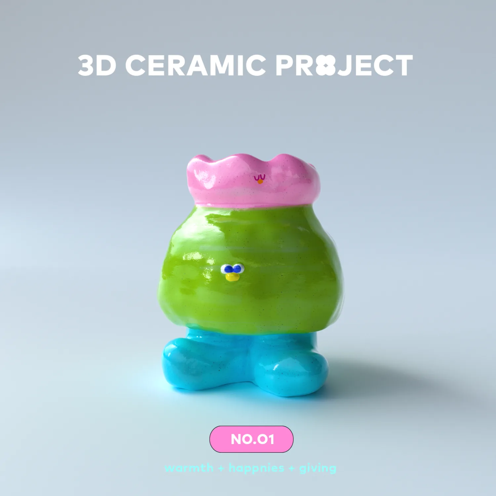

3D Ceramic Project @ NO.O1
"I guess I'll go back to using the computer for 3D 😭."
This is a sentence my friend, who taught me pottery most frequently in the second half of last year, said. One day, I had an epiphany! It's okay to start with 3D!
The starting point of this project is small, a bit whimsical, purely to fulfill my small wish. The main idea is to digitally sculpt pottery on the computer, trying to maintain the steps of making pottery and using shapes to record a certain day, creating the image in my mind. However, I won't give up on making pottery entirely, after all, the unique surprises that come out every time it's fired are indeed one of the joys of pottery!
(´,,ᴖ ᴖ,,｀)
─ NO.O1 : 20240103
- Type
- Personal work
- Year
- 2024